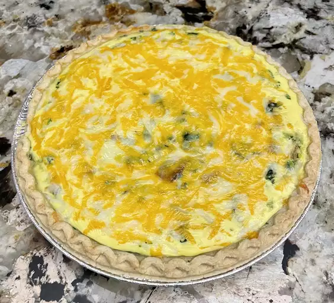

Spinach Quiche Recipe

Description :
This spinach quiche recipe is quick, versatile, and the perfect breakfast or brunch dish to feed a crowd.
Spinach Quiche Ingredients
These are the ingredients you’ll need to make this spinach quiche recipe:
- Butter: Sauté the onion and garlic in butter.
- Vegetables: You’ll need an onion, frozen spinach, and canned mushrooms.
- Seasonings: This spinach quiche is seasoned with fresh garlic, salt, and pepper.
- Cheeses: A combination of seasoned feta and Cheddar cheeses makes for a rich quiche.
- Pie shell: Use a store-bought or homemade pastry crust.
- Eggs: You’ll need four eggs for this 9-inch quiche.
- Milk: A cup of milk lends richness and moisture.
How to Make Spinach Quiche
You’ll find the full, step-by-step recipe below — but here’s a brief overview of what you can expect when you make this homemade spinach quiche:
- Sauté the onion and garlic in butter.
- Stir in the remaining veggies, feta, and ½ cup Cheddar. Season and pour into the shell.
- Whisk the eggs and milk together, then season. Pour into the shell.
- Bake for 15 minutes, then sprinkle with remaining cheese.
- Continue baking until the quiche is set in the center.